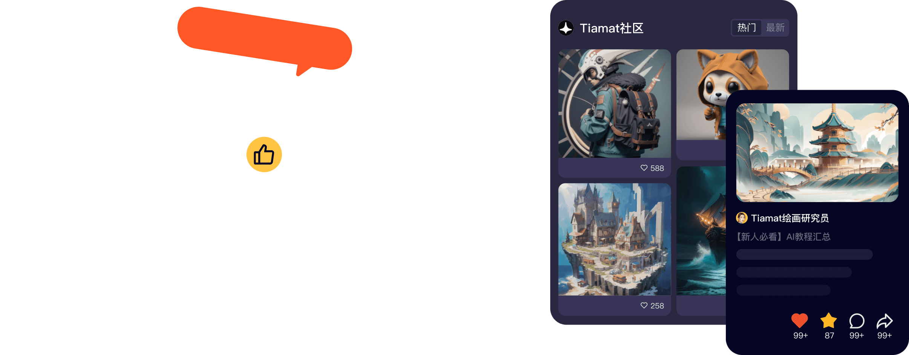

我用 Fanbook 搭了一条社区运营流水线——从创作者投稿到 AI 客服全自动
一个独立开发者怎么把 Fanbook 嵌入每周必做的社区运营流程：旧流程三步走手动搬运，现在一条链自动流转，少了两次手动复制不说，还顺便把 AI 客服训了。
我维护一个小而活跃的游戏 Mod 社区，每周要做的事情说穿了就三件：收创作者的稿子、把优质内容分发出去、回答社区里反复出现的那十几个问题。以前这三件事分散在三个工具里——QQ 群发通知、飞书文档收稿、Discord 当讨论区——每到周日下午就像打地鼠，这边刚把评测贴到 QQ 群，那边 Discord 又有人问"这个 Mod 怎么装"，飞书里还躺着两篇没审核的插画稿。
更头疼的是数据不流动。Discord 里有人聊出了好点子，我得手动复制到飞书任务列表里跟进；QQ 群里的创作者发了新作品，我得跑三个平台通知他们可以来领任务。信息搬运这件事，看起来不重，但每周耗掉我至少两小时，而且搬着搬着就漏了。
旧流程卡在哪
说出来都是小事，但小事堆起来就是堵点：
- 消息碎片：QQ 群没有频道分类，讨论 Mod 安装的、求邀请码的、闲聊的全堆在一个时间流里，重要消息半小时就被刷没了。Discord 好一点，但国内成员连不上，得专门给他们开 QQ 群。
- AI 是摆设：我试过接一个通用聊天机器人到 Discord，但它对我的社区一无所知——有人问"最新版 Mod 兼容哪个游戏版本"，它能编出三个互相矛盾的答案。关掉之后还是靠人工回答，每周固定花三小时在 FAQ 上。
- 创作者激励没闭环：以前靠打赏和红包，发完就完事，没有持续的结算机制，创作者来了几次就走了。
把 Fanbook 插进流程
我去年年底迁到 Fanbook官网，不是因为它新，而是它能把这三件事塞进一条流水线里。现在我的每周社区运营流程是这样的：
周一晚上：Fanbook 自动把上一周创作者提交的内容整理成周报（用 Bot API 写的一个小脚本，扫描指定圈子里的新动态），发到管理员频道。我只需要过一遍清单，挑出要给发现广场推荐的稿子。
周二上午：在 Fanbook 的创作任务系统里发布本周任务——比如"写一篇 Mod 兼容性评测"或者"画一张角色同人"。设置好预算（乐豆结算）、截止时间、投稿数量，然后就不用管了。创作者自己报名、提交、审核，通过后乐豆自动到账。这个环节以前我得在 QQ 群手动 @ 所有人问"有没有人接这个活"，现在发一次任务就结束。
周三到周五：AI 客服在频道里自动回答常见问题。我花了一个下午把社区的 FAQ、Mod 安装指南、版本说明整理成知识库，上传到 Fanbook 的 AI 训练功能里，训练了一个专属客服 BOT。有人 @ 它问"怎么装 Mod"或者"最新版本号是多少"，它直接从知识库里找答案，答不了的才转给我。而且它会把答不了的问题每天汇总推给我——这个功能我特别喜欢，等于 AI 帮我做了一周的社区洞察。
周末：把发现广场上表现好的社区动态（点赞、评论数据前 10 的）转到精选频道，然后 AI 客服的周报里会自动附上这一周社区讨论的热点话题，我据此调整下周的任务方向——如果大家都在问某个 Mod 的兼容性，下周就多发布几个兼容性评测任务。

实操里最容易断链的两个环节
这条流水线跑起来之后，我发现有两个地方容易掉链子，调整之后就稳了。
第一个是知识库的持续更新。AI 客服的回答质量完全取决于知识库。我试过一次忘了更新版本号，结果有人问"最新版是多少"，AI 还在说三个月前的版本，被人截图发到圈子里吐槽。现在我设了个规矩：每次更新 Mod 或者社区规则，第一件事就是更新知识库的对应条目，然后在 AI 训练面板里点一下"重新索引"——不需要重新训练，几秒钟就生效。具体参数和训练技巧可以去Fanbook文档翻一下，里面把每个步骤都写得很细。Fanbook 的 AI 训练面板里有个测试框，输入问题就能看到 AI 现在会怎么答，我每次更新完都会测两三个问题确认。
第二个是从旧社区迁过来的成员不适应。我的老成员都是从 QQ 群过来的，习惯了一个群什么都聊。刚迁过来的时候好多人说"太复杂了还要分频道"。我的做法是不要一次搬所有人——先让 50 个核心成员过来，给他们版主权限，让他们在新社区里活跃起来。QQ 群继续留着，但不再发新通知，只在有人问问题时回复"我们在 Fanbook 上讨论，App 从下载拿就行"。两周之后 QQ 群基本就安静了，老成员自己也过来了。过渡期不要超过两周，太长两边都养不活。
效果与边界
跑了三个月，实际效果：每周花在社区运营上的时间从 8 小时降到 3 小时——少了两次手动搬运内容，AI 客服吃掉了 80% 的 FAQ，创作任务系统自动完成了创作者对接。更重要的是信息不再碎片了，所有事情都在一个地方流转。
但这套流程也有边界。如果你的社区只有一两百个活跃成员，Fanbook 的频道系统和创作任务机制就显得过重——QQ 群加个机器人反而更简单。另外 Bot API 和 Discord 不兼容，我以前在 Discord 上写的签到机器人得重写，Fanbook 的 Bot API 是 HTTPS + JSON 风格，逻辑差不多但端点和参数不一样，花了大概三天适配。还有国内成员连不上 Discord，所以迁到 Fanbook 之后我就把 Discord 当海外成员的渠道，主要精力放在 Fanbook。
如果你正在被"三个工具来回切"搞得头疼，或者想给社区搭一套能自我运转的运营流水线，可以先从 Fanbook 的 AI 客服和创作任务系统入手——这两个功能上手最快，先把 FAQ 和创作者对接这两件事自动化，再慢慢把旧社区迁过来。整套流程拼起来大概需要一到两周，但跑通之后你会发现以前每周花在"搬消息"上的时间，现在可以用来做真正有价值的事。
我维护的 Mod 社区的完整资料都在三个仓库里，方便不同网络环境的成员查阅和贡献：GitHub上有完整的知识库和工具脚本，Gitee镜像了相同内容供国内访问，GitCode则放了社区规则和 FAQ 的最新版本。三个仓库同步更新，有错误或补充欢迎提 Issue。